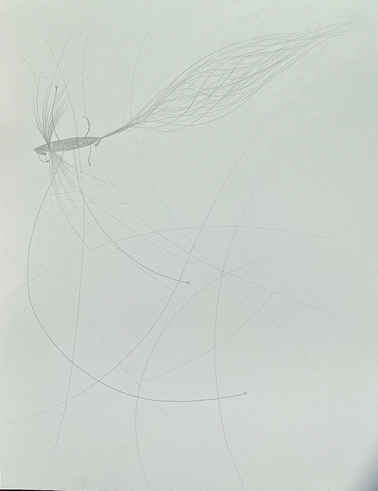

Oloid
The oloid is the symbol for my studio practice where I blend my artistic practice with my engineering practice, as well as the symbol for how I love. In my studio practice I ingegrate my conscious mind with my embodied intelligence. I do this formerly in both spheres with study and practice. And informally through the delight of my own integrated mind which I taste as I move around the world, draw, write poetry, dance, and engage in conversation. The ocean of my imagination is spherical, and I rest my attention at the center so I can move equally between sensation and concept. This is not easy task in a business world where sensation is so ruthlessly cut-out of the praxis of working, so I dedicate to this practice with the ferocity of a nun who knows what she stands to lose if the fullness of their being is once again denied.
This is me proclaiming myself. After four years of working in tech I found I was still holding my breath. I began dulling my body, not sure how to bring it’s perspective to bare on the abstractions I was interactin with. I shut down decades of channel making between my conscioussness and subconscious via my embodied intelligence. For example, what are you referencing when you check your gut before making a decision? I spent years developing an inner vocabulary for having such conversations. I did so as a form of survival, but now direct this conversations towards desire, curisoity, and joy.
I find I am most at rest when I see events as existing a the intersection of a cresting wave of matter and time, but not in themselves worthy of all of our focus. I prefer a diffuse holding of identification. I rest somewhere around the present moment and present material situation, but with a soft grip. I stay positioned on the wave so I can move about. This is how I think, and rather than try to un-think this way, I gravitate towards disciplines that benefit from such modes of thinking. This is waht led me to human-computer ecosystems. The situated nature of my our own minds blinds to signal about our world, even our own minds. Quantified self, extended mind, and empathetic tech seemed obvious extensions of a homo sapiens sapiens. As obvious as penicillin in the care of the self and species. Trace the ripples of our motion to model trajectories and propose helpful nudges to deliver new possible futures.
That’s how it seemed to me four years ago, and now, it feels even more clearly the purpose of software engineering, when applied to problems that matter. Also, perhaps given the age I’ve begun my formal engineering training in, I see machine learning as a part of a “full-stack” platform engineering system. I also hold information as the first class citizen, with all other aspects of the system serving it.
- Gathering data
- Storing data
- Moving data
- Enriching data
- Serving data
- Protecting data
This is what guides my on-going research on engineering systems. But that is only part of the story. Engineering systems exist as human-computer ecosystems. So, if we care about engigneering solutions, we must care deeply about the human cultures that steward such engineering solutions into existence. For me, this is rooted both in practice of nuturing the community as well as encouraging deep personal development; studio practices for every player where they are encouraged to cultivate their own unique art of engineering. I will speak of both things here, but MBAs be warned, I don’t speak the language of capitalism. The culture that births powerful human-computer ecosystems also exists beyond capitalism at the very fiber of complex social organization (think ants, honeybees, adversarial AIs, etc.). My ideation springs from these deeper wells, although my experience shows such creative upswells play nicely with startups, provided they are situated to honor creativity and humanity, which is what I’ve experienced at Landed.
I’m chosing to blog about this because bringing my full mind-body to the table is why I got in tech. For whatever reason, I felt I had to prove myself first in the formalism of the craft before proposing my personal take. I think this was prudent, and I will forver study to increase the bandwidth between my idiosyncratic imagination and colleagues (because networks are where it’s at!).